Start trading with Saxo
Open an account in just 5 minutes

Select an account according to your desired instruments
150+ FX pairs supported, which is No. 1 offering in Japan (as on May, 2019). 6,000+ US Stocks offered and many more Foreign stocks.
[Customer Support]
Saxo Bank Securities Ltd.
Contact us by e-mail: info@saxobank.co.jp
Contact us by phone (tollfree): 0120-007-390
Business hours: Mon – Fri, 09:00 – 18:00 (except weekends and holidays)